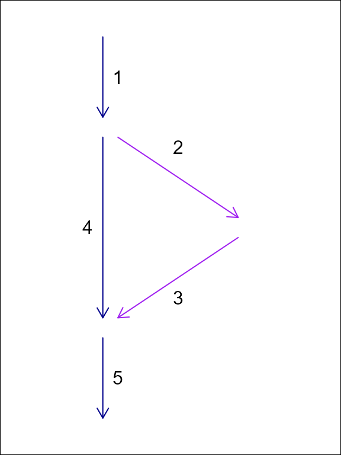

hydroloom
Hydroloom is designed to provide general hydrologic network
functionality for any hydrographic or hydrologic data. This is
accomplished with
1) the hy S3 class,
2) a collection of utility functions,
3) functions to work with a hydrologic network topology as a
graph,
4) functions to create and add useful network attributes,
5) and functions to index data to a network of flow network lines and
waterbody polygons.
This introduction covers the hy S3 class and the core
flow network topology concepts necessary to use hydroloom
effectively.
For the latest development and to open issues, please visit the package github repository.
hy S3 class
Hydroloom implements an hy S3 class designed to simplify
integration of hydroloom with existing data and workflows.
hy() converts a data.frame to an hy
data.frame with attributes compatible with
hydroloom functions. hy_reverse() converts a
hy data.frame back to its original attribute
names. You can teach hydroloom how to map your attributes
to hydroloom_name_definitions() with the
hydroloom_names() function.8
Most hydroloom functions will work with either a
hy object or a data.frame containing names
registered with hydroloom_names(). Any attributes added to
the data.frame will contain names from
hydroloom and must be renamed in the calling
environment.
Internally, the hy S3 class has an attribute
orig_names as shown below. The orig_names
attribute is used to convert original attribute names back to their
original values. Using the hydroloom names and the
hy S3 object are note required but adopting
hydroloom_names_definitions() may be helpful for people
aiming for consistent, simple, and accurate attribute names.
library(hydroloom)
hy_net <- sf::read_sf(system.file("extdata/new_hope.gpkg", package = "hydroloom")) |>
dplyr::select(COMID, REACHCODE, FromNode, ToNode, Hydroseq, TerminalFl, Divergence)
hy(hy_net[1:3,])
#> Simple feature collection with 3 features and 7 fields
#> Geometry type: MULTILINESTRING
#> Dimension: XY
#> Bounding box: xmin: 1517192 ymin: 1555954 xmax: 1518702 ymax: 1557298
#> CRS: unknown
#> # A tibble: 3 × 8
#> id aggregate_id fromnode tonode topo_sort terminal_flag divergence
#> <int> <chr> <dbl> <dbl> <dbl> <int> <int>
#> 1 8893864 03030002000018 250031721 250031853 250016373 0 0
#> 2 8894490 03030002000018 250031895 250031854 250015665 0 0
#> 3 8894494 03030002000018 250031897 250031895 250015826 0 0
#> # ℹ 1 more variable: geom <MULTILINESTRING [m]>
attr(hy(hy_net), "orig_names")
#> COMID REACHCODE FromNode ToNode Hydroseq
#> "id" "aggregate_id" "fromnode" "tonode" "topo_sort"
#> TerminalFl Divergence geom
#> "terminal_flag" "divergence" "geom"Network Representation
Representing Dendritic Network Topology
A network of flowlines can be represented as an edge-to-edge (e.g. edge list) or edge-node topology. An edge list only expresses the connectivity between edges (flowlines in the context of rivers), requiring nodes (confluences in the context of rivers) to be inferred.
#> id toid fromnode tonode
#> 1 3 N1 N3
#> 2 3 N2 N3
#> 3 NA N3 N4
In an edge-node topology, edges are directed to nodes which are then directed to other edges. An edge-to-edge toplogy does not include intervening nodes.
The “toid” of a terminal flowline can be either NA or, by convention,
0 or ““. Using 0 or an empty string is preferred within
hydroloom but both are handled in most cases. Further, as
long as 0 is not in the set of IDs, there is little practical
difference.
In hydroloom, edge-to-edge topology is referred to with
“id and toid” attributes.
Representing Dendritic Network Topology
As discussed in the vignette("hydroloom") vignette, a
hydrologic flow network can be represented as an edge to edge (e.g. edge
list) topology or an edge-node topology. In the case of dendritic
networks, an edge list can be stored as a single “toid” attribute on
each feature and nodes are redundant as there would be one and only one
node for each feature. In non-dendritic networks, an edge list can
include multiple “toid” attributes for each feature, necessitating a one
to many relationship that can be difficult to interpret. Nevertheless,
the U.S. National Hydrography Dataset uses an edge-list format in its
“flow table” and the format is capable of storing non-dendritic feature
topology.
Using a node topology to store a flow network, each feature flows from one and only one node and flows to one and only one node. This one to one relationship between features and their from and to nodes means that the topology fits in a table with one row per feature as is common practice in spatial feature data.
For this reason, the NHDPlus data model converts the NHD “flow table” into node topology in its representation of non dendritic topology. The downside of this approach is that it requires creation of a node identifier. These node identifiers are a table deduplication device that enables a one to many relationship (the flow table) to be represented as two one to one relationships. Given this, in hydrologic flow networks, node identifiers can be created based on an edge list and discarded when no longer needed.


In this example of an edge list topology and a node topology for the same system, feature ‘1’ flows to two edges but only one node. We can represent this in tabular form with a duplicated row for the divergence downstream of ‘1’ or with the addition of node identifiers as shown in the following tables.
| id | fromnode | tonode |
|---|---|---|
| 1 | N1 | N2 |
| 2 | N2 | N3 |
| 3 | N3 | N4 |
| 4 | N2 | N4 |
| 5 | N4 | N5 |
| id | toid |
|---|---|
| 1 | 2 |
| 1 | 4 |
| 2 | 3 |
| 3 | 5 |
| 4 | 5 |
| 5 | 0 |
Network Graph Representation
The make_index_ids() hydroloom function
creates an adjacency matrix representation of a flow network as well as
some convenient content that are useful when traversing the graph. This
adjacency matrix is used heavily in hydroloom functions and
may be useful to people who want to write their own graph traversal
algorithms.
A companion to make_index_ids(),
make_fromids() reverses the graph such that the adjacency
matrix is directed opposite the direction of the provided graph. This is
used for upstream flow network traversals.
In the example below we’ll add a dendritic toid and explore the
make_index_ids() output.
y <- add_toids(hy_net, return_dendritic = TRUE)
ind_id <- make_index_ids(y)
names(ind_id)
#> [1] "to" "lengths" "to_list"
dim(ind_id$to)
#> [1] 1 746
max(lengths(ind_id$lengths))
#> [1] 1
names(ind_id$to_list)
#> [1] "id" "indid" "toindid"
sapply(ind_id, class)
#> $to
#> [1] "matrix" "array"
#>
#> $lengths
#> [1] "numeric"
#>
#> $to_list
#> [1] "data.frame"Now we’ll look at the same thing but for a non dendritic set of
toids. Notice that the to element of ind_id
now has three rows. This indicates that one or more of the connections
in the matrix has three downstream neighbors. The lengths
element indicates how many non NA values are in each column
of the matrix in the to element.
y <- add_toids(st_drop_geometry(hy_net), return_dendritic = FALSE)
ind_id <- make_index_ids(y)
names(ind_id)
#> [1] "to" "lengths" "to_list"
dim(ind_id$to)
#> [1] 3 746
max(ind_id$lengths)
#> [1] 3
sum(ind_id$lengths == 2)
#> [1] 84
sum(ind_id$lengths == 3)
#> [1] 1
names(ind_id$to_list)
#> [1] "id" "indid" "toindid"
sapply(ind_id, class)
#> $to
#> [1] "matrix" "array"
#>
#> $lengths
#> [1] "numeric"
#>
#> $to_list
#> [1] "data.frame"